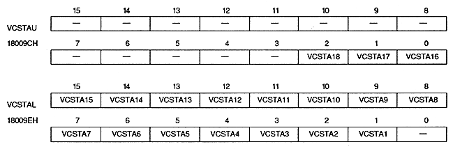

Vertical cell scroll table address bit : Vertical cell scroll table address bit (VCSTA18 to VCSTA1)
| VCSTA18 to VCSTA16 | 18009CH | Bits 2 to 0 | < | |
| VCSTA15 to VCSTA1 | 18009EH | Bits 15 to 1 |
The actual start VRAM address is calculated by the following formula. If the VRAM capacity is 4M bits, the most significant bit of the address is ignored.
(vertical cell scroll table start address) = (vertical cell scroll table address register value 18 bits) × 4H